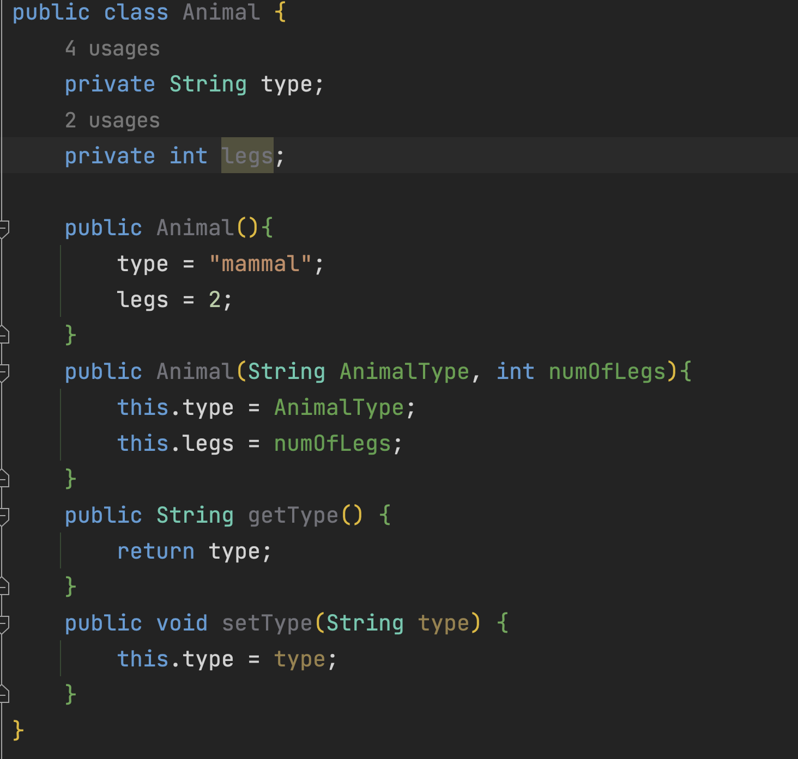
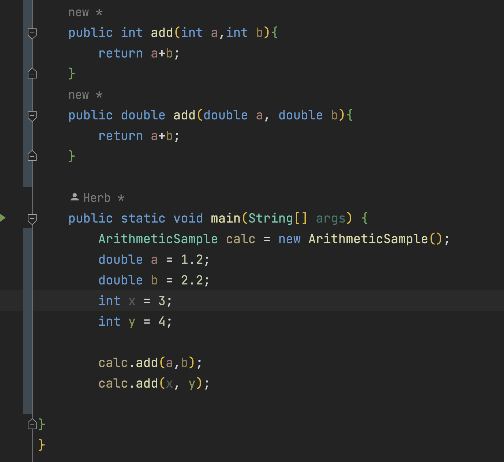
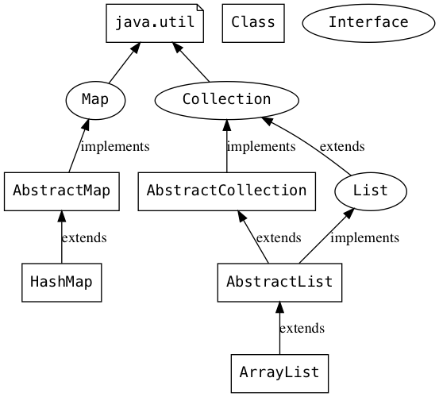

Progamming Concepts
Introduction
A lot of software developers (some self taught some schooling) don't have a good enough understanding of programming concepts that are crucial in building efficient applications and algorithms. Here my job is to inform those who don't know what they don't know 😉
Object Oriented Programming
Encapsulation
Here is an example of encapsulation
Here you can see that the Animal class has 2 fields type and legs. Where encapsulation takes place is when we set the keyword private to each object field. The reason why we use the keyword private is to keep other parts outside of the class from using these object fields. This privatization is generally used to allow each object to use their fields as one whole entity. This concept derives itself from the real world. Example, a dog is known to have 4 legs, someone can't just make a dog have 5 legs because 4 legs are attributed to a dog.
Polymorphism
With the help of polymorphism, several data types can be handled by a single function or method in object-oriented programming. This enables more adaptable and reuseable code. Polymorphism is the capacity of a single function or method to operate on a variety of data types. Along with inheritance and encapsulation, it is one of the core ideas in object-oriented programming.
Here is an example of polymorphism

Here you can see that the method add() is written twice but one metrhod returns an
integer and the other returns a double. This allows the client using this method to be able to
perform the same process but with different data types. This idea of taking up multiple forms is
know as polymorphism. Another word used with polymorphism is overriding a method.
Abstraction
To abstract away something is to bury the implementation details within something, which can be a prototype or a function. Therefore, you are not required to fully comprehend the function's purpose while calling it. You would never write any code if you had to comprehend every single function in a large codebase. It would take weeks or months to read everything. By removing some details, you can produce a reusable, easily understandable, and adaptable codebase.
Here is an illustration of some Abstract Collection classes is Java
When anything has to be extended, an abstract class is used to represent it. Let's imagine that we wish to use an application to model employees and their various job roles. The work that each person performs depends on their position, even if we are aware that each employee will have a name and be a part of a department. We may create a class called Employee and is used for specific employment positions that extend Employee to simulate this scenario. To require implementation from subclasses, we can make the Employee class abstract and define an abstract method inside of it.
In another Java file we can create another class called developer and extend the Employee class. In a real world perspective we can represent this concept abstractly like this.
Inheritance
Inheritance is a concept in object-oriented programming (OOP) where a class (called the child class or subclass) inherits the properties and methods of another class (called the parent class or superclass). This allows you to reuse and organize your code, as well as the ability to model real-world relationships between different objects. The child class can also add or override properties and methods of the parent class.
A good example of inheritance would be the image above this. The Developer class inherits the Employee super class.
More to come!
That's it for now. Make sure to be on the look out for more concepts being posted right here i.e time/space complexity, REST API's, databases etc...